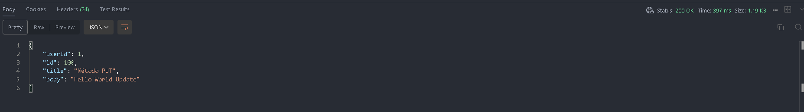
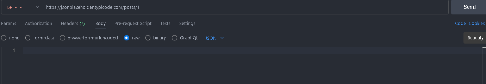
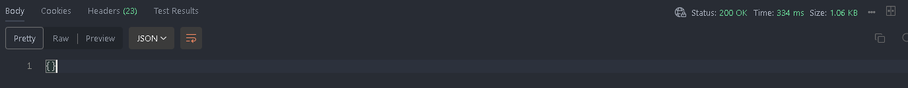

Universidad de las Fuerzas Armadas ESPE
Pullaguari Cedeño Axel Lenin / NRC:14956
Peticiones HTTP:
Las peticiones o métodos dentro de los protocos de transferencias de hipertextos (HTTP) conforman un grupo de acciones que permiten dar instrucciones para diferentes tipos de recursos.
Dentro de la presente tarea se tomaran estos métodos y serán implementados con su respectiva documentación en este archivo. Leer Readme para más información sobre los objetivos de esta tarea.
Métodos:
- GET: El método GET solicita una representación de un recurso específico. Las peticiones que usan el método GET sólo deben recuperar datos.
- HEAD: El método HEAD pide una respuesta idéntica a la de una petición GET, pero sin el cuerpo de la respuesta.
- POST: El método POST se utiliza para enviar una entidad a un recurso en específico, causando a menudo un cambio en el estado o efectos secundarios en el servidor.
- PUT: El modo PUT reemplaza todas las representaciones actuales del recurso de destino con la carga útil de la petición.
- DELETE: El método DELETE borra un recurso en específico.
- CONNECT: El método CONNECT establece un túnel hacia el servidor identificado por el recurso.
- OPTIONS: El método OPTIONS es utilizado para describir las opciones de comunicación para el recurso de destino.
- TRACE: El método TRACE realiza una prueba de bucle de retorno de mensaje a lo largo de la ruta al recurso de destino.
- PATCH: El método PATCH es utilizado para aplicar modificaciones parciales a un recurso.
Para un mayor sustento haremos uso de una API ficticia proporcionada por JSONPlaceholder y haciendo uso de su guía lo implementaremos mediante Postman y su extension de VS CODE 
Los métodos a ser implementados seran los siguientes:
| Método |
Descripción |
| GET |
Obtenga información de un recurso |
| POST |
Cree un nuevo recurso. |
| PUT |
Actualice completamente un recurso existente. |
| PATCH |
Actualice parcialmente un recurso existente |
| DELETE |
Elimine un recurso existente. |
Siguiendo la guía proporciona por JSONPlaceholder y el uso de POSTMAN se detallan los resultados a continuación:
- Dentro de la extensión de Postman para VS Code, debemos crear dentro de nuestro Workspace un New HTTP Request
- En la nueva ventana procedemos a ingresar nuestro link de la API ficticia para poder solicitar nuestros métodos.
Método GET
- Seleccionar el método GET de nuestro panel y dar click en el botón SEND
 Como se puede ver en la siguiente imagen.
Como se puede ver en la siguiente imagen.
- La información obtenida es mostrada en formato Json y se obtiene todos los elementos. Nota: Podemos especificar si deseamos solo un elemento de la Api y obtenerlo con nuestro método GET

Análisis: Como podemos observar dentro del Status de nuestra petición nos aroja el código 200: La solicitud ha tenido éxito. La información devuelta con la respuesta depende del método utilizado en la solicitud.
Método POST
- Seleccionar el método POST de nuestro panel
- Seleccionar la opción de Body, la opción raw y escoger el formato JSON, procedemos a escribir nuestro elemento en JSON
{ "userId":1, "id":101, "title":"Método Post", "body":"Hello World" }
- Dar click en el botón SEND
 Como se puede ver en la siguiente imagen.
Como se puede ver en la siguiente imagen.
- Se nos muestra el elemento creado dentro de nuestra API gracias al metodo POST

Análisis: Como podemos observar dentro del Status de nuestra petición nos aroja el código 201: La solicitud se cumplió y resultó en la creación de un nuevo recurso.
Método PUT
- Seleccionar el método POST de nuestro panel y especificar en nuestro link el recurso que deseamos modificar por completo.
- Seleccionar la opción de Body, la opción raw y escoger el formato JSON, procedemos a escribir nuestro elemento en JSON
{ "userId":1, "id":123, "title":"Método PUT", "body":"Hello World Update" }
- Dar click en el botón SEND
 Como se puede ver en la siguiente imagen.
Como se puede ver en la siguiente imagen.
- Se nos muestra el elemento modificado en nuestra API gracias al metodo POST

Análisis: Como podemos observar dentro del Status de nuestra petición nos aroja el código 200: La solicitud ha tenido éxito. La información devuelta con la respuesta depende del método utilizado en la solicitud.
Método PATCH
- Seleccionar el método PATCH de nuestro panel y especificar en nuestro link el recurso que deseamos modificar parcialmente.
- Seleccionar la opción de Body, la opción raw y escoger el formato JSON, procedemos a escribir nuestro elemento en JSON
`{
"title":"Esta es una actualización parcial",
}`
- Dar click en el botón SEND
 Como se puede ver en la siguiente imagen.
Como se puede ver en la siguiente imagen.
- Se nos muestra el elemento modificado parcialmente dentro de nuestra API gracias al metodo PATCH

Análisis: Como podemos observar dentro del Status de nuestra petición nos aroja el código 200: La solicitud ha tenido éxito. La información devuelta con la respuesta depende del método utilizado en la solicitud.
Método DELETE
- Seleccionar el método DELETE de nuestro panel y dar click en el botón SEND

Como se puede ver en la siguiente imagen.
- La información fué eliminada, todos los recursos fueron eliminados.
Nota: Podemos especificar si deseamos solo un elemento de la Api y eliminarlo con nuestro método DELETE

Análisis: Como podemos observar dentro del Status de nuestra petición nos aroja el código 200: La solicitud ha tenido éxito. La información devuelta con la respuesta depende del método utilizado en la solicitud.
Conclusión:
El uso de la API Postamn, nos ayuda a facilitar el uso de métodos que queramos usar en nuestros recursos, se pueden utilizar otros servicios que nos generan los mismos resultados que Postman, lo importante es saber como funcionan y se desenvuelven las peticiones HTTP.
Bibliografía:
- Métodos de petición HTTP - HTTP | MDN. (2023, 24 julio). MDN Web Docs. Métodos HTTP